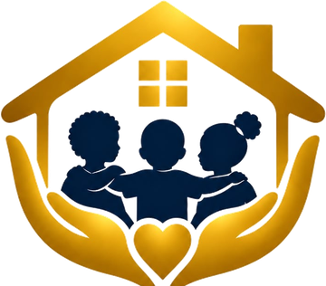

ALOGLegacy Foundation
Two website designs to choose from
Both use the same content, logo and colours. Open each one, scroll through it on your phone and computer, and let us know which you prefer. Photos and figures are placeholders until the foundation's own are ready.